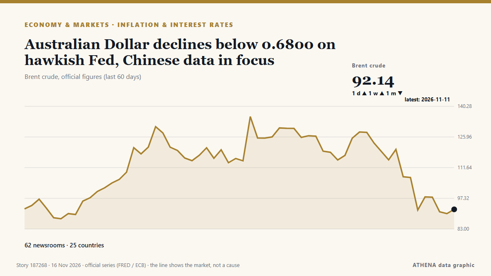

Économie, finance et marchés
SponsoriséPrésenté par  Cybernetics and Artificial Intelligence Lab Welcome to the Cybernetics and Artificial Intelligence Laboratory, established at the Department of Business Administration of the National and Kapodistrian University of Athens. The lab is headed by Professor Dimitrios Thomakos. The lab aims to do research that can be published in top venues. Our research uses tools and methods of Artificial Intelligence, and lies in the following areas: - Forecasting - Decision making - Cyber security - Finance We are always looking forward to collaborating with exceptional students!
Cybernetics and Artificial Intelligence Lab Welcome to the Cybernetics and Artificial Intelligence Laboratory, established at the Department of Business Administration of the National and Kapodistrian University of Athens. The lab is headed by Professor Dimitrios Thomakos. The lab aims to do research that can be published in top venues. Our research uses tools and methods of Artificial Intelligence, and lies in the following areas: - Forecasting - Decision making - Cyber security - Finance We are always looking forward to collaborating with exceptional students!
Les titres sont affichés en anglais, tels que publiés.
Veille des marchés - chiffres officiels
Dans quel sens évoluent les indicateurs officiels des marchés - hausse, baisse ou stabilité - avec la dernière valeur officielle et sa date, et l'actualité des marchés vérifiée par ATHENA. Valeurs officielles, pas des cours en temps réel.
Énergie
| 1 jour | 1 semaine | 1 mois | Valeur officielle | |
|---|---|---|---|---|
| Brent crude | ▲ | ▲ | ▼ | $92,14/bblDonnées officielles du 11 nov. 2026 |
| WTI crude | ▬ | ▼ | ▼ | $89,62/bblDonnées officielles du 11 nov. 2026 |
| US natural gas (Henry Hub) | ▬ | ▲ | ▼ | $3,00/MMBtuDonnées officielles du 11 nov. 2026 |
| European natural gas (1 mois · 3 mois · 12 mois)(1M · 3M · 12M) | ▲ | ▲ | ▲ | $25,49/MMBtuDonnées officielles du 1 sept. 2026 |
| Coal (Australia) (1 mois · 3 mois · 12 mois)(1M · 3M · 12M) | ▲ | ▲ | ▲ | $153,84/tDonnées officielles du 1 sept. 2026 |
Alimentation
| 1 mois | 3 mois | 12 mois | Valeur officielle | |
|---|---|---|---|---|
| Wheat | ▲ | ▲ | ▲ | $246,85/tDonnées officielles du 1 sept. 2026 |
Bourses américaines
| 1 jour | 1 semaine | 1 mois | Valeur officielle | |
|---|---|---|---|---|
| S&P 500 | ▼ | ▲ | ▼ | Direction seulement (indice © Cboe)Données officielles du 13 nov. 2026 |
| Nasdaq Composite | ▼ | ▲ | ▼ | Direction seulement (indice © Cboe)Données officielles du 13 nov. 2026 |
Taux, risque et dollar
| 1 jour | 1 semaine | 1 mois | Valeur officielle | |
|---|---|---|---|---|
| US 10-year Treasury yield | ▲ | ▲ | ▼ | 5,10 %Données officielles du 12 nov. 2026 |
| Market volatility (VIX) | ▲ | ▼ | ▲ | Direction seulement (indice © Cboe)Données officielles du 12 nov. 2026 |
| US dollar, broad index | ▲ | ▲ | ▲ | 121,88Données officielles du 6 nov. 2026 |
L'euro face aux autres monnaies
| 1 jour | 1 semaine | 1 mois | Valeur officielle | |
|---|---|---|---|---|
| EUR/USD | ▼ | ▼ | ▼ | 1,1052 USDDonnées officielles du 13 nov. 2026 |
| EUR/GBP | ▬ | ▲ | ▼ | 0,8356 GBPDonnées officielles du 13 nov. 2026 |
| EUR/CHF | ▲ | ▲ | ▼ | 0,9266 CHFDonnées officielles du 13 nov. 2026 |
| EUR/JPY | ▬ | ▬ | ▼ | 176,83 JPYDonnées officielles du 13 nov. 2026 |
| EUR/CNY | ▼ | ▼ | ▼ | 7,3738 CNYDonnées officielles du 13 nov. 2026 |
| EUR/TRY | ▬ | ▼ | ▲ | 55,667 TRYDonnées officielles du 13 nov. 2026 |
| EUR/NOK | ▬ | ▲ | ▼ | 10,5695 NOKDonnées officielles du 13 nov. 2026 |
Sources : Energy Information Administration des États-Unis (pétrole, gaz américain), FMI (gaz européen, charbon, blé), Trésor et Réserve fédérale des États-Unis (taux à 10 ans, indice du dollar) Cboe (VIX), S&P Dow Jones Indices (S&P 500) et Nasdaq (Nasdaq Composite), via FRED (Réserve fédérale de Saint-Louis) ; taux de référence de l'euro © Banque centrale européenne. Les chiffres sont les dernières valeurs officielles avec leur date, pas des cours en temps réel. Les directions sont calculées par ATHENA.
Crypto, ETF et actions dans l'actualité
- Asian investors chase indirect access to Anthropic shares amid IPO fever Risque 0.0 16 nov.
- Russell Brand’s wife shares message from disgraced comedian in prison Risque 3.9 15 nov.
- ASX set for flat start, Nvidia scandal weighs on Wall Street Risque 0.9 15 nov.
- PM vows to work ‘in lockstep’ to revive Welsh Labour as party ‘must take stock’ Risque 0.0 15 nov.
- AI retreat fuels India's stock market comeback in great rotation trade Risque 1.2 15 nov.
- Cryptocurrencies Price Prediction: Bitcoin, Ripple & Crypto – European Wrap 13 November Risque 1.5 14 nov.
- Trump bought Nvidia shares, then cleared path for chip sales to China: Report Risque 0.8 14 nov.
- Nvidia stock suffers longest weekly losing streak since 2012 as market value sinks by $1.7 trillion Risque 0.8 14 nov.
- 'NCP merger talks a laughing stock, damaging Sharad Pawar's image' Risque 0.0 14 nov.
- Turkish investors show interest in buying 49% shares in Akkuyu project — Rosatom Risque 0.0 14 nov.

Inflation et taux d'intérêtAustralian Dollar declines below 0.6800 on hawkish Fed, Chinese data in focus
Relayé par 62 médias dans 25 pays depuis le 7 nov. Premier à l'annoncer : Taipei Times. ATHENA évalue le risque à 3.2/10 (modéré), avec 85 % de confiance.
| 3 nov. | 124 |
|---|---|
| 4 nov. | 114 |
| 5 nov. | 118 |
| 6 nov. | 95 |
| 7 nov. | 42 |
| 8 nov. | 65 |
| 9 nov. | 155 |
| 10 nov. | 129 |
| 11 nov. | 129 |
| 12 nov. | 113 |
| 13 nov. | 70 |
| 14 nov. | 36 |
| 15 nov. | 38 |
| 16 nov. | 4 |
EUR/JPY Price Forecast: Holds gains above 176.50, but downside bias prevails below 100-day SMA
The EUR/JPY cross trades in positive territory around 176.65 during the early European trading hours on Monday. de FXStreet
Russell Brand Maintains Innocence In Message Through Wife From Behind Bars
Russell Brand has claimed that he is “not guilty for the offences I have been jailed for” in a message read by his wife on YouTube. de Deadline
UK weather: Met Office issues snow and ice warning as London drenched by rain
‘There is the potential for some disruptive ice and snow’ - Met Office’s Ethan Douglas. de Evening Standard (London)
Russell Brand’s wife shares message from disgraced comedian in prison
Brand was jailed this week after being found guilty of raping one woman and sexually assaulting three others during his career. de The Irish News (Belfast)
Trump administration kicks off fiscal 2027 with record spending and a massive deficit
The federal government kicked off fiscal 2027 with a record October deficit. de FXStreet
Akhilesh calls Dalits 'damdar', vows to wipe out BJP in UP
Akhilesh Yadav emphasized the importance of the Dalit community in upcoming Uttar Pradesh elections. de Times of India
More Australians failing to make mortgage payments as interest rate rises bite
Data from the Commonwealth Bank of Australia attributed the small increase in the number of people struggling to inflation and rising interest rates. de Sydney Morning Herald
New World Development proposes US$3.2 billion rights issue
Bain Capital has decided against investing in the indebted company. de The Business Times
Pakistan could become world’s sixth-largest economy before 2050: PM Sharif
Dubai: Pakistan could become the world’s sixth-largest economy before 2050, Prime Minister Shehbaz Sharif said on Friday as he called for foreign investment in mineral processing and manufacturing. de Gulf News
Yellow Weather Warning Issued for Heavy Rainfall in Two Regions of Bulgaria
Bulgaria’s national meteorological bureau has issued the Code Orange warning of dangerous weather for several districts for November 13 because. de The Sofia Globe
‘Ramayana 2 will do 10 times more’: Ram Gopal Varma claims budget of part 1 is Rs 800 cr
Filmmaker Ram Gopal Varma has once again showered praise on Namit Malhotra's Ramayana: Part 1. de Deccan Herald
Dubai Police bust gang who recruited people to open bank accounts for investment fraud
Dubai Police have arrested members of a gang accused of investment fraud. de Khaleej Times (working feed)
Gold and silver prices rise on commodity markets
Gold and silver prices have risen on the COMEX commodity exchange in New York. de AzerNews
Anwar meets Carney in Manila, with Malaysia-Canada energy and digital trade on the table
MANILA, Nov 15 — Efforts to expand trade and investment cooperation, particularly in the energy, digital economy a... de Malay Mail
West Bank: Israeli settlers attack Palestinian home, olive harvesters
JENIN: Settlers attacked Palestinian families from the town of Ya’bad, west of Jenin, on Friday while they were harvesting olives, local sources reported. de Arab News
AI retreat fuels India's stock market comeback in great rotation trade
The MSCI India gauge has rebounded 11% from a six-month low set in October, adding more than $400 billion in value and almost erasing this year's losses. de Business Standard
Making waves in markets: Nvidia CEO resigns, CoreWeave beats expectations, Mainfreight exceeds forecasts
Nvidia reports on Tuesday evening and Infratil on Wednesday. de BusinessDesk
Brazil Interest Rate Cuts Stall on US Yields
Brazil's central bank has cut five times this year, but higher US rates and 4.58% inflation shrink its room. de The Rio Times
BOE likely to raise rates further in 2027
LONDON: The Bank of England will probably need to raise interest rates further in 2027, over and above an increase at the next meeting in December, to combat inflation, Bank of England Chief… de Business Recorder
Germany postpones sugar tax and scraps electricity tax cut ahead of budget talks
Germany's proposed plastic tax has also been killed, along with some proposed social benefit cuts, as federal leaders agree to compromises in the 2027 budget. de The Local Germany
Oklahoma AD questions Ole Miss effort; decision to play Sunday 'inexplicable'
Oklahoma AD Roger Denny was critical of the SEC's decision to move the Sooners' home game against Ole Miss to Sunday following Friday's nationwide ground stop. de ESPN
Sudan: Does Your Culture Shape How You Look At Art? What an Eye-Tracking Study in Sudan Revealed
[The Conversation Africa] Today, Old Dongola is an abandoned settlement on the banks of the Nile in northern Sudan. de AllAfrica
Cryptocurrencies Price Prediction: Bitcoin, Ripple & Crypto – European Wrap 13 November
Bitcoin (BTC) is struggling to find support, slipping below $70,000 as multiple headwinds threaten to push the Crypto King lower. de FXStreet
Israel advances plans for 895 new settlement homes across West Bank: Palestinian commission
LONDON: Israeli authorities have advanced 11 settlement expansion plans that would add 895 housing units across the occupied West Bank, alongside industrial and commercial developments, the… de Arab News
Nvidia stock suffers longest weekly losing streak since 2012 as market value sinks by $1.7 trillion
Jensen Huang's resignation added to Nvidia's market woes, with the stock already in a downward slide since early October. de CNBC World
PM Mitsotakis Pledges Double the Eurozone’s Growth in WSJ Interview
Mitsotakis said Greece lost 25% of its GDP during a decade of austerity. de to vima
Zamfara stands still as Gov Lawal hosts First Lady, Remi Tinubu for mega rally
Mrs Tinubu described her visit as a powerful expression of solidarity and compassion, as well as a commitment to women’s welfare and advancement. de Premium Times
Cold health alert for three England regions as temperatures plunge below -6C
The UK Health Security Agency (UKHSA) has issued a yellow cold health alert for the North West, North East and Yorkshire from 9pm on Sunday, warning of a greater risk to life for vulnerable people as… de Birmingham Mail
Eating out, commuting get pricier in Baguio, Cordillera in October
Dining out and commuting by public transportation were a bit pricey in October, as shown by inflation rates of 9.3 percent in Baguio City and 9.2 percent in the Cordillera region. de Philippine Daily Inquirer
UN welcomes Kofi Annan’s appearance on new GH¢100 Heritage Banknote
By Nana Karikari, Senior Global Affairs Correspondent The United Nations has commended Ghana’s decision to place former UN Secretary-General Kofi Annan on the country’s newly unveiled GH¢100 banknote. de GBC Ghana Online
Minimum Wage Board for garment workers to meet again on Monday
Board Chairman Syed Azad Subhani, a District and Sessions Judge, will preside over the meeting, convened under Section 139 of the Bangladesh Labour Act, 2006. de The Business Standard (Bangladesh) (working feed)
Greece Short-Term Rental Revenue Rises 8.7% in 2026
Short-term rental revenue in Greece has increased by 8.7% in 2026, driven by higher nightly rates, while occupancy remains broadly stable and direct bookings gain market share. de Greek City Times